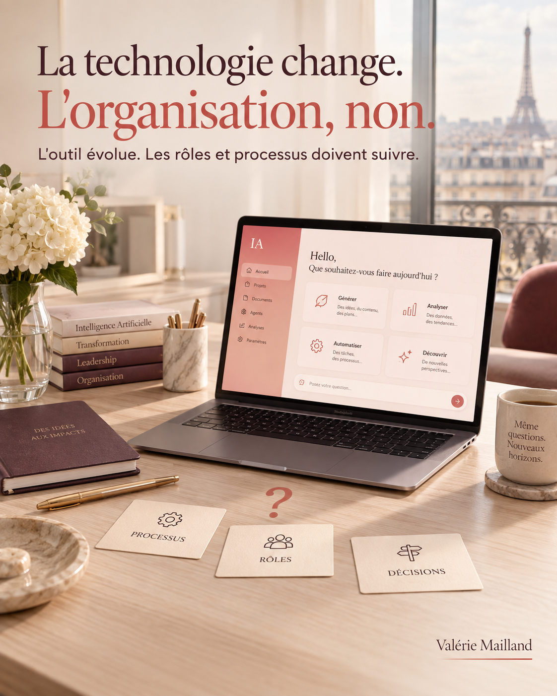

La transformation IA échoue rarement à cause de la technologie. Elle échoue quand l’organisation n’a pas changé, seulement l’outil.
 Publié sur LinkedIn
Publié sur LinkedIn

Pendant mes années aux côtés de dirigeants, j’ai vu défiler beaucoup d’outils et de plans de transformation. L’IA n’existait pas encore sous cette forme. Mais le scénario, lui, n’a pas changé.
La qualité de l’outil est rarement en cause. Le vrai sujet, c’est ce qui ne change pas autour de lui.
Une étude de RAND Corporation le confirme aujourd’hui pour l’IA : plus de 80 % des projets échouent, non par manque de technologie, mais faute d’alignement avec les priorités et l’organisation de l’entreprise.
Ce chiffre ne dit pas que l’IA ne fonctionne pas.
Il dit que l’outil, seul, ne transforme rien.
🔧 On change le logiciel. On garde les mêmes processus,
les mêmes rôles, les mêmes réunions où personne ne décide vraiment.
Résultat : l’IA s’ajoute à l’existant. Elle ne le transforme pas.
1. Qui décide, et à quel moment.
2. Quels processus sont revus, pas seulement automatisés.
3. Quels rôles évoluent réellement.
Sans ça, l’organisation retrouve vite ses réflexes d’avant, avec un outil en plus.
💬 Dans votre organisation,
qu’est-ce qui devrait changer avant l’outil, pas après ?
Source : RAND Corporation, « The Root Causes of Failure for Artificial Intelligence Projects and How They Can Succeed », 2024.